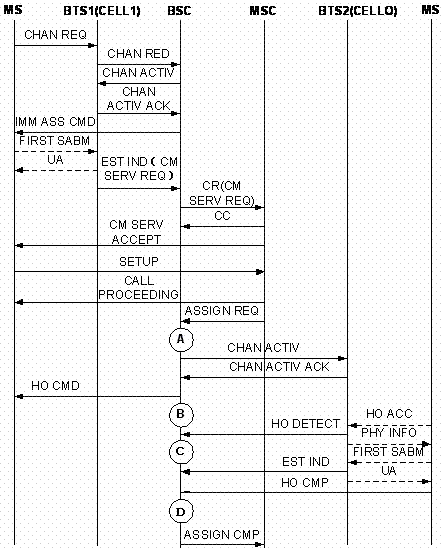

Measurement Counters
| ID | Counter | Description |
|---|---|---|
| 1278079433 | CELL.INTRABSC.OUTCELL.HO.CMD.SD.NOT.INCLUDE.DR.900.900 | H3110W:Number of Outgoing Internal Inter-Cell Handover Commands (SDCCH) (Excluding Directed Retry) (900/850/810-900/850/810) |
| 1278079434 | CELL.INTRABSC.OUTCELL.HO.CMD.SD.NOT.INCLUDE.DR.1800.1800 | H3110X:Number of Outgoing Internal Inter-Cell Handover Commands (SDCCH) (Excluding Directed Retry) (1800/1900-1800/1900) |
| 1278079435 | CELL.INTRABSC.OUTCELL.HO.CMD.SD.NOT.INCLUDE.DR.900.1800 | H3110Y:Number of Outgoing Internal Inter-Cell Handover Commands (SDCCH) (Excluding Directed Retry) (900/850/810-1800/1900) |
| 1278079436 | CELL.INTRABSC.OUTCELL.HO.CMD.SD.NOT.INCLUDE.DR.1800.900 | H3110Z:Number of Outgoing Internal Inter-Cell Handover Commands (SDCCH) (Excluding Directed Retry) (1800/1900-900/850/810) |
| 1278079437 | CELL.INTRABSC.OUTCELL.HO.CMD.TCHF.NOT.INCLUDE.DR.900.900 | H3117W:Number of Outgoing Internal Inter-Cell Handover Commands (TCHF) (Excluding Directed Retry) (900/850/810-900/850/810) |
| 1278079438 | CELL.INTRABSC.OUTCELL.HO.CMD.TCHF.NOT.INCLUDE.DR.1800.1800 | H3117X:Number of Outgoing Internal Inter-Cell Handover Commands (TCHF) (Excluding Directed Retry) (1800/1900-1800/1900) |
| 1278079439 | CELL.INTRABSC.OUTCELL.HO.CMD.TCHF.NOT.INCLUDE.DR.900.1800 | H3117Y:Number of Outgoing Internal Inter-Cell Handover Commands (TCHF) (Excluding Directed Retry) (900/850/810-1800/1900) |
| 1278079440 | CELL.INTRABSC.OUTCELL.HO.CMD.TCHF.NOT.INCLUDE.DR.1800.900 | H3117Z:Number of Outgoing Internal Inter-Cell Handover Commands (TCHF) (Excluding Directed Retry) (1800/1900-900/850/810) |
| 1278079441 | CELL.INTRABSC.OUTCELL.HO.CMD.TCHH.NOT.INCLUDE.DR.900.900 | H3118W:Number of Outgoing Internal Inter-Cell Handover Commands (TCHH) (Excluding Directed Retry) (900/850/810-900/850/810) |
| 1278079442 | CELL.INTRABSC.OUTCELL.HO.CMD.TCHH.NOT.INCLUDE.DR.1800.1800 | H3118X:Number of Outgoing Internal Inter-Cell Handover Commands (TCHH) (Excluding Directed Retry) (1800/1900-1800/1900) |
| 1278079443 | CELL.INTRABSC.OUTCELL.HO.CMD.TCHH.NOT.INCLUDE.DR.900.1800 | H3118Y:Number of Outgoing Internal Inter-Cell Handover Commands (TCHH) (Excluding Directed Retry) (900/850/810-1800/1900) |
| 1278079444 | CELL.INTRABSC.OUTCELL.HO.CMD.TCHH.NOT.INCLUDE.DR.1800.900 | H3118Z:Number of Outgoing Internal Inter-Cell Handover Commands (TCHH) (Excluding Directed Retry) (1800/1900-900/850/810) |
| 1278079445 | CELL.INTRABSC.OUTCELL.HO.CMD.DR.900.900 | H3111W:Number of Outgoing Internal Inter-Cell Handover Commands (Directed Retry) (900/850/810-900/850/810) |
| 1278079446 | CELL.INTRABSC.OUTCELL.HO.CMD.DR.1800.1800 | H3111X:Number of Outgoing Internal Inter-Cell Handover Commands (Directed Retry) (1800/1900-1800/1900) |
| 1278079447 | CELL.INTRABSC.OUTCELL.HO.CMD.DR.900.1800 | H3111Y:Number of Outgoing Internal Inter-Cell Handover Commands (Directed Retry) (900/850/810-1800/1900) |
| 1278079448 | CELL.INTRABSC.OUTCELL.HO.CMD.DR.1800.900 | H3111Z:Number of Outgoing Internal Inter-Cell Handover Commands (Directed Retry) (1800/1900-900/850/810) |
| 1278079503 | CELL.INTRABSC.OUTCELL.HO.CMD.UL.QLTY | H311A:Number of Outgoing Internal Inter-Cell Handover Commands (Uplink Quality) |
| 1278079504 | CELL.INTRABSC.OUTCELL.HO.CMD.DL.QLTY | H311B:Number of Outgoing Internal Inter-Cell Handover Commands (Downlink Quality) |
| 1278079505 | CELL.INTRABSC.OUTCELL.HO.CMD.UL.RXL | H311C:Number of Outgoing Internal Inter-Cell Handover Commands (Uplink Strength) |
| 1278079506 | CELL.INTRABSC.OUTCELL.HO.CMD.DL.RXL | H311D:Number of Outgoing Internal Inter-Cell Handover Commands (Downlink Strength) |
| 1278079507 | CELL.INTRABSC.OUTCELL.HO.CMD.TA | H311E:Number of Outgoing Internal Inter-Cell Handover Commands (Timing Advance) |
| 1278079508 | CELL.INTRABSC.OUTCELL.HO.CMD.BETTER.CELL | H311F:Number of Outgoing Internal Inter-Cell Handover Commands (Better Cell) |
| 1278079509 | CELL.INTRABSC.OUTCELL.HO.CMD.LOAD | H311G:Number of Outgoing Internal Inter-Cell Handover Commands (Load) |
| 1278079510 | CELL.INTRABSC.OUTCELL.HO.CMD.RAPID.LEV.DROP | H311H:Number of Outgoing Internal Inter-Cell Handover Commands (Rapid Level Drop) |
| 1278079511 | CELL.INTRABSC.OUTCELL.HO.CMD.MSC.INTERVENTION | H311I:Number of Outgoing Internal Inter-Cell Handover Commands (MSC Intervention) |
| 1278079512 | CELL.INTRABSC.OUTCELL.HO.CMD.OM.INTERVENTION | H311J:Number of Outgoing Internal Inter-Cell Handover Commands (OM Intervention) |
| 1278079514 | CELL.INTRABSC.OUTCELL.HO.CMD.OTHER | H311L:Number of Outgoing Internal Inter-Cell Handover Commands (Other Causes) |
| 1278079536 | CELL.INTRABSC.OUTCELL.HO.CMD.BSC.LOOP | H311Aa:Number of Outgoing Internal Inter-Cell Handover Commands During BSC Local Switch |
| 1278079537 | CELL.INTRABSC.OUTCELL.HO.CMD.BTS.LOOP | H311Ab:Number of Outgoing Internal Inter-Cell Handover Commands During BTS Local Switch |
| 1278079548 | CELL.INTRABSC.OUTCELL.HO.CMD.DUBAND.OUTTER.INNER | H311M:Number of Outgoing Internal Inter-Cell Handover Commands (Underlaid to Overlaid Subcell in Enhanced Dualband Network) |
| 1278079549 | CELL.INTRABSC.OUTCELL.HO.CMD.DUBAND.INNER.OUTTER | H311N:Number of Outgoing Internal Inter-Cell Handover Commands (Overlaid to Underlaid Subcell Handover in Enhanced Dualband Network) |
| 1278079550 | CELL.INTRABSC.OUTCELL.HO.CMD.DUBAND.INNER.USER.MOVE | H311O:Number of Outgoing Internal Inter-Celll Handover Commands (MS Handover in the Overlaid Subcell Covered by the Enhanced Dualband Network) |
Description
In the outgoing internal inter-cell handover procedure, after the channel in the target cell is assigned and activated, the BSC sends the HO CMD to the MS through the originating cell to notify the MS to access the new channel. The specific counter provides the number of outgoing internal inter-cell handover commands initiated by the BSC in the originating cell. Together with the Outgoing Internal Inter-Cell Handover Requests and the Failed Outgoing Internal Inter-Cell Handovers, this counter determines the outgoing internal inter-cell handover performance. Together with the counters related to the incoming internal inter-cell handovers, this counter determines the internal inter-cell handover performance.
The following counters provide the numbers of outgoing internal inter-cell handover requests during the handovers initiated based on the handover algorithm (excluding directed retry) when the handover occurs between the frequency bands. The target channel for handover can be SDCCH, TCHF, or TCHH. They are measured when the BSC sends the HO CMD message to the MS.
- H3110W:CELL.INTRABSC.OUTCELL.HO.CMD.SD.NOT.INCLUDE.DR.900.900
- H3110X:CELL.INTRABSC.OUTCELL.HO.CMD.SD.NOT.INCLUDE.DR.1800.1800
- H3110Y:CELL.INTRABSC.OUTCELL.HO.CMD.SD.NOT.INCLUDE.DR.900.1800
- H3110Z:CELL.INTRABSC.OUTCELL.HO.CMD.SD.NOT.INCLUDE.DR.1800.900
- H3117W:CELL.INTRABSC.OUTCELL.HO.CMD.TCHF.NOT.INCLUDE.DR.900.900
- H3117X:CELL.INTRABSC.OUTCELL.HO.CMD.TCHF.NOT.INCLUDE.DR.1800.1800
- H3117Y:CELL.INTRABSC.OUTCELL.HO.CMD.TCHF.NOT.INCLUDE.DR.900.1800
- H3117Z:CELL.INTRABSC.OUTCELL.HO.CMD.TCHF.NOT.INCLUDE.DR.1800.900
- H3118W:CELL.INTRABSC.OUTCELL.HO.CMD.TCHH.NOT.INCLUDE.DR.900.900
- H3118X:CELL.INTRABSC.OUTCELL.HO.CMD.TCHH.NOT.INCLUDE.DR.1800.1800
- H3118Y:CELL.INTRABSC.OUTCELL.HO.CMD.TCHH.NOT.INCLUDE.DR.900.1800
- H3118Z:CELL.INTRABSC.OUTCELL.HO.CMD.TCHH.NOT.INCLUDE.DR.1800.900
- H3111W:CELL.INTRABSC.OUTCELL.HO.CMD.DR.900.900
- H3111X:CELL.INTRABSC.OUTCELL.HO.CMD.DR.1800.1800
- H3111Y:CELL.INTRABSC.OUTCELL.HO.CMD.DR.900.1800
- H3111Z:CELL.INTRABSC.OUTCELL.HO.CMD.DR.1800.900
The following counters provide the numbers of outgoing internal inter-cell handover commands initiated by the BSC using BQ handover algorithm based on the UL or DL receive quality in the MR. They are measured when the BSC sends the HO CMD message to the MS.
- H311A:CELL.INTRABSC.OUTCELL.HO.CMD.UL.QLTY
- H311B:CELL.INTRABSC.OUTCELL.HO.CMD.DL.QLTY
The following counters provide the numbers of outgoing internal inter-cell handover commands initiated by the BSC using edge handover algorithm based on the UL or DL receive level in the measurement report. They are measured when the BSC sends the HO CMD message to the MS.
- H311C:CELL.INTRABSC.OUTCELL.HO.CMD.UL.RXL
- H311D:CELL.INTRABSC.OUTCELL.HO.CMD.DL.RXL
The following counters provide the numbers of outgoing internal inter-cell handover commands initiated by the BSC using TA handover algorithm based on the TA value in the measurement report. They are measured when the BSC sends the HO CMD message to the MS.
- H311E:CELL.INTRABSC.OUTCELL.HO.CMD.TA
- H311F:CELL.INTRABSC.OUTCELL.HO.CMD.BETTER.CELL
The following counters provide the numbers of outgoing internal inter-cell handover commands initiated by the BSC using load handover algorithm based on the current load conditions in the serving cell. It is measured when the BSC sends the HO CMD message to the MS.
- H310G:CELL.INTRABSC.OUTCELL.HO.REQ.LOAD
- H311G:CELL.INTRABSC.OUTCELL.HO.CMD.LOAD
- H311H:CELL.INTRABSC.OUTCELL.HO.CMD.RAPID.LEV.DROP
If the enhanced dual-band network is enabled, the following counters provide the numbers of outgoing internal inter-cell commands sent by the BSC to the MS based on the algorithms for enhanced dual-band network handover and the measurement report. They are measured when the BSC sends the HO CMD message to the MS.
The following counter provides the number of outgoing internal inter-cell handover commands initiated because of high load in the underlaid subcell. It is measured when the BSC sends the HO CMD message to the MS.
- H311M:CELL.INTRABSC.OUTCELL.HO.CMD.DUBAND.OUTTER.INNER
- H311N:CELL.INTRABSC.OUTCELL.HO.CMD.DUBAND.INNER.OUTTER
- H311O:CELL.INTRABSC.OUTCELL.HO.CMD.DUBAND.INNER.USER.MOVE
- H311I:CELL.INTRABSC.OUTCELL.HO.CMD.MSC.INTERVENTION
The following counter provides the number of outgoing internal inter-cell handover commands initiated manually by the maintenance personnel from the maintenance terminal. It is measured when the BSC sends the HO CMD message to the MS.
- H311J:CELL.INTRABSC.OUTCELL.HO.CMD.OM.INTERVENTION
- H311Aa:CELL.INTRABSC.OUTCELL.HO.CMD.BSC.LOOP
- H311Ab:CELL.INTRABSC.OUTCELL.HO.CMD.BTS.LOOP
- H311L:CELL.INTRABSC.OUTCELL.HO.CMD.OTHER
Measurement point
As shown in Figure 1, during the outgoing internal inter-cell handover procedure initiated by the BSC based on the measurement reports, the specific counter is measured in the originating cell at B when the BSC sends the HO CMD message to the MS.

| Measurement points | Description |
|---|---|
| A | Outgoing internal inter-cell handover requests (excluding directed retry) |
| B | Outgoing Internal Inter-Cell Handover Commands (Excluding Directed Retry) |
| C | Outgoing Internal Inter-Cell Handover Detection Messages Received by BSC (Excluding Directed Retry) |
| D | Successful Outgoing Internal Inter-Cell Handovers (Excluding Directed Retry) |
As shown in Figure 2, during the outgoing internal inter-cell handover procedure (directed retry) initiated by the BSC based on the measurement reports, the specific counter is measured in the originating cell at B when the BSC sends the HO CMD message to the MS.

| Measurement points | Description |
|---|---|
| A | Outgoing Internal Inter-Cell Handover Requests (Directed Retry) |
| B | Outgoing Internal Inter-cell Handover Commands (Directed Retry) |
| C | Successful Outgoing Internal Inter-Cell Handovers (Directed Retry) |
| D | Successful Outgoing Internal Inter-Cell Handovers (Directed Retry) |
Formula
None
Unit
None
Related Features
| Counter | Feature ID | Feature Name |
|---|---|---|
| CELL.INTRABSC.OUTCELL.HO.CMD.SD.NOT.INCLUDE.DR.900.900 |
GBFD-110601 GBFD-510501 GBFD-110608 |
HUAWEI I Handover HUAWEI II Handover SDCCH Handover |
| CELL.INTRABSC.OUTCELL.HO.CMD.SD.NOT.INCLUDE.DR.1800.1800 |
GBFD-110601 GBFD-510501 GBFD-110608 |
HUAWEI I Handover HUAWEI II Handover SDCCH Handover |
| CELL.INTRABSC.OUTCELL.HO.CMD.SD.NOT.INCLUDE.DR.900.1800 |
GBFD-110601 GBFD-510501 GBFD-110608 |
HUAWEI I Handover HUAWEI II Handover SDCCH Handover |
| CELL.INTRABSC.OUTCELL.HO.CMD.SD.NOT.INCLUDE.DR.1800.900 |
GBFD-110601 GBFD-510501 GBFD-110608 |
HUAWEI I Handover HUAWEI II Handover SDCCH Handover |
| CELL.INTRABSC.OUTCELL.HO.CMD.TCHF.NOT.INCLUDE.DR.900.900 |
GBFD-110601 GBFD-510501 |
HUAWEI I Handover HUAWEI II Handover |
| CELL.INTRABSC.OUTCELL.HO.CMD.TCHF.NOT.INCLUDE.DR.1800.1800 |
GBFD-110601 GBFD-510501 |
HUAWEI I Handover HUAWEI II Handover |
| CELL.INTRABSC.OUTCELL.HO.CMD.TCHF.NOT.INCLUDE.DR.900.1800 |
GBFD-110601 GBFD-510501 |
HUAWEI I Handover HUAWEI II Handover |
| CELL.INTRABSC.OUTCELL.HO.CMD.TCHF.NOT.INCLUDE.DR.1800.900 |
GBFD-110601 GBFD-510501 |
HUAWEI I Handover HUAWEI II Handover |
| CELL.INTRABSC.OUTCELL.HO.CMD.TCHH.NOT.INCLUDE.DR.900.900 |
GBFD-113401 |
Half Rate Speech |
| CELL.INTRABSC.OUTCELL.HO.CMD.TCHH.NOT.INCLUDE.DR.1800.1800 |
GBFD-113401 |
Half Rate Speech |
| CELL.INTRABSC.OUTCELL.HO.CMD.TCHH.NOT.INCLUDE.DR.900.1800 |
GBFD-113401 |
Half Rate Speech |
| CELL.INTRABSC.OUTCELL.HO.CMD.TCHH.NOT.INCLUDE.DR.1800.900 |
GBFD-113401 |
Half Rate Speech |
| CELL.INTRABSC.OUTCELL.HO.CMD.DR.900.900 |
GBFD-110601 GBFD-510501 GBFD-110607 |
HUAWEI I Handover HUAWEI II Handover Direct Retry |
| CELL.INTRABSC.OUTCELL.HO.CMD.DR.1800.1800 |
GBFD-110601 GBFD-510501 GBFD-110607 |
HUAWEI I Handover HUAWEI II Handover Direct Retry |
| CELL.INTRABSC.OUTCELL.HO.CMD.DR.900.1800 |
GBFD-110601 GBFD-510501 GBFD-110607 |
HUAWEI I Handover HUAWEI II Handover Direct Retry |
| CELL.INTRABSC.OUTCELL.HO.CMD.DR.1800.900 |
GBFD-110601 GBFD-510501 GBFD-110607 |
HUAWEI I Handover HUAWEI II Handover Direct Retry |
| CELL.INTRABSC.OUTCELL.HO.CMD.UL.QLTY |
GBFD-110601 GBFD-510501 |
HUAWEI I Handover HUAWEI II Handover |
| CELL.INTRABSC.OUTCELL.HO.CMD.DL.QLTY |
GBFD-110601 GBFD-510501 |
HUAWEI I Handover HUAWEI II Handover |
| CELL.INTRABSC.OUTCELL.HO.CMD.UL.RXL |
GBFD-110601 GBFD-510501 |
HUAWEI I Handover HUAWEI II Handover |
| CELL.INTRABSC.OUTCELL.HO.CMD.DL.RXL |
GBFD-110601 GBFD-510501 |
HUAWEI I Handover HUAWEI II Handover |
| CELL.INTRABSC.OUTCELL.HO.CMD.TA |
GBFD-110601 GBFD-510501 |
HUAWEI I Handover HUAWEI II Handover |
| CELL.INTRABSC.OUTCELL.HO.CMD.BETTER.CELL |
GBFD-110601 GBFD-510501 |
HUAWEI I Handover HUAWEI II Handover |
| CELL.INTRABSC.OUTCELL.HO.CMD.LOAD |
GBFD-110601 GBFD-510501 |
HUAWEI I Handover HUAWEI II Handover |
| CELL.INTRABSC.OUTCELL.HO.CMD.RAPID.LEV.DROP |
GBFD-110601 GBFD-510501 |
HUAWEI I Handover HUAWEI II Handover |
| CELL.INTRABSC.OUTCELL.HO.CMD.MSC.INTERVENTION |
GBFD-110601 GBFD-510501 |
HUAWEI I Handover HUAWEI II Handover |
| CELL.INTRABSC.OUTCELL.HO.CMD.OM.INTERVENTION |
GBFD-110601 GBFD-510501 |
HUAWEI I Handover HUAWEI II Handover |
| CELL.INTRABSC.OUTCELL.HO.CMD.OTHER |
GBFD-110601 GBFD-510501 |
HUAWEI I Handover HUAWEI II Handover |
| CELL.INTRABSC.OUTCELL.HO.CMD.BSC.LOOP |
GBFD-117701 |
BSC Local Switch |
| CELL.INTRABSC.OUTCELL.HO.CMD.BTS.LOOP |
GBFD-117702 |
BTS Local Switch |
| CELL.INTRABSC.OUTCELL.HO.CMD.DUBAND.OUTTER.INNER |
GBFD-114402 |
Enhanced Dual-Band Network |
| CELL.INTRABSC.OUTCELL.HO.CMD.DUBAND.INNER.OUTTER |
GBFD-114402 |
Enhanced Dual-Band Network |
| CELL.INTRABSC.OUTCELL.HO.CMD.DUBAND.INNER.USER.MOVE |
GBFD-114402 |
Enhanced Dual-Band Network |